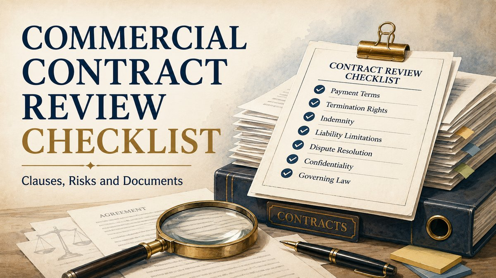

Last updated: July 2026.

A commercial contract should be reviewed as an operating system for the transaction, not merely as a legal formality. Every important clause should answer four questions: what must be done, who carries the risk, what document proves compliance, and what happens if the obligation is not performed.
Why review the contract before signature?
Commercial disputes often begin with an agreement that uses broad language for the main business promise but leaves payment triggers, acceptance, variation, delay, liability and termination unclear. Once performance has started, the parties may rely on emails, purchase orders or informal instructions that do not fit the signed contract.
Pre-signing review should therefore test whether the document accurately reflects the proposed transaction, whether each obligation can be performed and evidenced, and whether the risk allocation is commercially acceptable. A signed agreement is not automatically clear, complete or enforceable merely because both parties executed it.
Clause: What does the agreement require?
Risk: Which party bears the consequence if the event occurs?
Document: What record will establish performance, approval or breach?
Remedy: What happens if the obligation is delayed, rejected or not performed?
Identify the correct contracting parties
Start with the complete legal identity of every party. The agreement, quotation, purchase order, invoice and payment account should not casually switch between a parent company, subsidiary, branch, trade name, proprietorship or group entity.
- Legal name and entity type.
- Registered or principal business address.
- Corporate identification, registration or tax details where relevant.
- Name and designation of the authorised signatory.
- Board resolution, power of attorney, partnership authority or other signing record.
- Role of affiliates, subcontractors, guarantors and beneficiaries.
The Indian Contract Act addresses competence to contract and the law of agency. Where a person signs for another entity, authority should be verified instead of assumed from designation alone.
Check formation, consideration and certainty
The final document should show a clear commercial bargain. Acceptance should correspond to the offer, the consideration and object should be lawful, and the obligations should be sufficiently certain to perform and enforce.
Review whether important terms remain open, contradictory or subject only to future agreement. Expressions such as “as required,” “best quality,” “reasonable deductions,” “mutually decided later” or “market standard” may need objective criteria, approval procedures or measurable schedules.
Define scope, specifications and deliverables
The scope clause should identify exactly what is being supplied or performed. Where the operative detail appears in a statement of work, purchase order, technical schedule or proposal, the agreement should incorporate that document clearly.
- Goods, services, licence, project or work package.
- Technical specifications and quality standards.
- Quantities, locations and delivery method.
- Milestones and completion dates.
- Customer inputs, access, approvals and dependencies.
- Excluded services and assumptions.
- Named deliverables and supporting records.
Where one party's performance depends on information, access, material or approval from the other, the agreement should record that dependency and the effect of delay.
Milestones, inspection and acceptance
Payment and liability often depend on whether work was accepted. The contract should distinguish delivery, inspection, testing, provisional acceptance, final acceptance and deemed acceptance.
Check the inspection period, objective rejection grounds, defect-notice process, correction period and consequence of silence. A customer should not have an unlimited right to withhold acceptance without reasons, while a supplier should not treat mere delivery as final acceptance where testing was contractually required.
Create a controlled change procedure
Commercial scope frequently changes after signature. A change-control clause should identify who may request a change, what information must be supplied, how price and timeline impact will be assessed and when the change becomes binding.
- Written change request.
- Revised scope or specification.
- Price, tax and resource impact.
- Milestone and delivery adjustment.
- Approval by authorised representatives.
- Order of precedence between the change and original agreement.
Section 62 of the Contract Act addresses novation, rescission and alteration. The operational process should prevent informal instructions from creating uncertainty about whether the original terms were changed.
Review price, tax, invoicing and payment terms
The financial clause should allow an independent reader to calculate when and how payment becomes due. It should also match the invoicing and accounting process the parties will actually use.
- Contract price, rate card, currency and price-adjustment mechanism.
- Applicable taxes and responsibility for withholding or deduction.
- Advance, milestone, recurring, retention and final payments.
- Invoice trigger and mandatory supporting documents.
- Credit period and payment method.
- Process for invoice disputes and undisputed payment.
- Interest, late fee or other consequence of delay.
- Set-off, debit note, retention and recovery rights.
A right to withhold or deduct should identify the circumstances and procedure. Broad unilateral deduction language can create uncertainty where the agreement does not require notice, reasons or reconciliation.
Separate warranties, indemnities and guarantees
These provisions serve different functions and should not be merged into one general risk clause.
Warranty: A contractual assurance concerning quality, authority, compliance, performance or another stated fact.
Indemnity: Allocation of specified loss, liability or third-party exposure.
Guarantee: A secondary obligation connected to the default of a principal debtor or obligor.
Insurance: A requirement to maintain identified risk cover; it does not by itself define contractual liability.
For an indemnity, check the triggering event, covered losses, causation standard, exclusions, notice, defence of third-party claims, settlement control, mitigation and interaction with the liability cap. Sections 124 to 128 of the Contract Act contain the statutory framework for indemnity and guarantee.
Review limitation and exclusion of liability
A liability clause should be read with the indemnity, warranty, insurance, confidentiality, intellectual-property and termination clauses. A cap that appears clear in isolation may become uncertain when several provisions state that they apply “notwithstanding anything else.”
- Aggregate cap and the period to which it applies.
- Claim-specific, event-specific or annual sub-limits.
- Excluded categories of direct, indirect or consequential loss.
- Loss of profit, revenue, opportunity, data or reputation.
- Carve-outs for fraud, wilful misconduct, confidentiality, IP or data obligations.
- Whether indemnity payments fall within or outside the cap.
- Alignment with insurance limits and commercially foreseeable exposure.
No review should assume that every exclusion or cap is automatically effective. The wording, bargaining context, subject matter, lawful object, certainty and applicable statutory rules remain relevant.
Damages, penalties and agreed sums
Where the agreement states liquidated damages, service credits, delay charges or another pre-agreed amount, the clause should identify the breach, calculation, cap, notice and whether the remedy is exclusive or cumulative.
Sections 73 to 75 of the Contract Act address compensation for breach, stipulated penalties and compensation following rightful rescission. A stated amount is not an automatic guarantee of recovery in every case, and a clause should not be drafted as though the final legal consequence is independent of the statutory framework.
Intellectual property and work product
The agreement should distinguish pre-existing material, newly created work product, third-party material, open-source components, licences and confidential know-how.
- Who owns pre-existing intellectual property.
- Who owns or may use deliverables created under the contract.
- When assignment or licence takes effect.
- Territory, duration, purpose and sublicensing rights.
- Restrictions on reuse of templates, tools or background technology.
- Responsibility for third-party permissions.
- Post-termination use and return obligations.
The scope of ownership should match the commercial price and intended use. A clause transferring “all IP” without identifying the material or retained rights may create later disputes.
Confidentiality, data and record management
Confidentiality clauses should define protected information, permitted recipients, purpose restrictions, security measures, exclusions and the return or destruction process.
Where personal, financial, technical or customer data will be processed, a general confidentiality clause may not be enough. The parties should identify the data involved, permitted use, access controls, incident reporting, retention, deletion, audit and subcontractor requirements applicable to the transaction.
Document-retention terms should also preserve records needed for invoicing, tax, audit, regulatory compliance and dispute resolution.
Term, renewal, suspension and termination
The agreement should distinguish expiry, automatic renewal, non-renewal, suspension, termination for cause and termination for convenience.
- Initial term and renewal mechanism.
- Notice period for non-renewal.
- Material breach and cure period.
- Immediate termination events.
- Insolvency, illegality or prolonged force-majeure events.
- Right to suspend performance or access.
- Termination for convenience and applicable compensation.
Check whether the termination right is mutual, whether minor breach can trigger disproportionate consequences and whether the cure process is workable.
Specify consequences of termination
Termination should not leave the parties uncertain about accrued rights and unfinished work. The agreement should address:
- Payment for completed and accepted work.
- Treatment of advances, retention and refundable amounts.
- Pending purchase orders and work in progress.
- Return of property, equipment and original documents.
- Transition or handover assistance.
- Return, deletion or permitted retention of data.
- End of licences and access rights.
- Clauses intended to survive termination.
Termination does not automatically erase liabilities or payment obligations that accrued before termination.
Force majeure and change in law
A force-majeure clause should be drafted for the actual transaction rather than copied as a generic list of disasters. It should define the event, required causal connection, notice, mitigation, suspension and termination threshold.
Review whether payment obligations, price escalation, supply-chain shortages, regulatory changes, import restrictions or commercial hardship are covered, excluded or addressed through a separate change-in-law mechanism.
Section 56 of the Contract Act concerns impossible acts and subsequent impossibility or unlawfulness. Commercial inconvenience, reduced profitability or a more expensive method of performance should not automatically be described as legal impossibility.
Subcontracting, assignment and change of control
Check whether either party may delegate performance, appoint subcontractors, assign receivables, transfer the contract or undergo a change of control without consent.
The clause should distinguish assignment of contractual rights from delegation of performance obligations. Where subcontracting is permitted, the principal contractor should remain responsible for specified performance, confidentiality, data and compliance obligations unless the agreement states otherwise.
Notices and authorised communications
A notice clause should identify addresses, email accounts, permitted delivery methods, deemed receipt rules and the process for updating contact details.
Operational communication, invoice submission, change approval, breach notice, termination notice and arbitration invocation may require different levels of formality. The agreement should not rely on a single generic email address if important notices must reach authorised personnel.
Governing law, jurisdiction and arbitration
The dispute clause should be reviewed as a connected system. Governing law, court jurisdiction, arbitral seat, hearing venue and place of performance are not interchangeable.
- Applicable substantive law.
- Courts with agreed jurisdiction.
- Scope of disputes referred to arbitration.
- Seat and venue of arbitration.
- Number and appointment of arbitrators.
- Institutional or ad hoc procedure.
- Language and notice process.
- Negotiation or mediation steps.
- Interim relief and confidentiality.
Section 7 of the Arbitration and Conciliation Act requires an arbitration agreement to be in writing and recognises specified signed, recorded and incorporated forms. The exact wording should be reviewed instead of relying only on the heading “dispute resolution.”
Execution, electronic signatures, stamping and registration
Before signature, confirm the applicable execution method, number of counterparts, signatory authority, witness or attestation requirement and whether schedules are complete and initialled where appropriate.
The Information Technology Act recognises electronic records, electronic signatures and contracts formed through electronic means, subject to its conditions and statutory exclusions. Its First Schedule excludes specified documents and transactions, including powers of attorney, trusts, wills and contracts for sale or conveyance of immovable property or an interest in such property.
Stamp duty may depend on the character of the instrument and the applicable state law. Some instruments may also require registration. Notarisation should not be treated as a substitute for stamping, registration or another mandatory formality.
Check schedules, annexures and order of precedence
Schedules often contain the operative commercial details. Confirm that every referenced annexure exists, uses the final version and is signed or incorporated consistently.
- Statement of work and specifications.
- Price schedule and rate card.
- Milestones and acceptance criteria.
- Service levels and remedies.
- Security, insurance or compliance documents.
- Data-processing or confidentiality schedule.
- Form of purchase order or change request.
An order-of-precedence clause should state which document controls if the main agreement, schedule, purchase order, proposal or policy conflicts.
Common contract-review mistakes
- Using the wrong legal entity or an unauthorised signatory.
- Leaving the scope dependent on an unsigned proposal or future discussion.
- Making payment due without defining the invoice and acceptance trigger.
- Allowing unilateral deductions without notice or reconciliation.
- Using indemnity, warranty and damages language interchangeably.
- Setting a liability cap without checking carve-outs and indemnity interaction.
- Granting broad IP ownership without preserving background material.
- Using a generic confidentiality clause for a data-intensive transaction.
- Providing termination rights without post-termination consequences.
- Copying a force-majeure clause unrelated to the transaction.
- Confusing arbitral seat, venue, governing law and jurisdiction.
- Executing incomplete schedules or an improperly stamped instrument.
Final pre-signing checklist
- Verify every party, signatory and authority document.
- Confirm the commercial proposal matches the contract.
- Test the scope, milestone, dependency and acceptance process.
- Recalculate price, tax, invoice and payment provisions.
- Review deductions, interest, security and guarantee terms.
- Map each warranty, indemnity and liability exposure.
- Confirm IP, confidentiality, data and record obligations.
- Check renewal, suspension, termination and transition provisions.
- Review force majeure, change in law, assignment and subcontracting.
- Confirm notices, governing law, jurisdiction and arbitration wording.
- Complete every schedule and resolve document conflicts.
- Confirm execution, stamp and registration requirements before signing.
Related contract and dispute guides
References / Sources
- Indian Contract Act, 1872 — India Code.
- Arbitration and Conciliation Act, 1996 — India Code.
- Information Technology Act, 2000 — India Code.
- Indian Stamp Act, 1899 — India Code.
- Applicable state stamp law, registration requirements, tax rules, sector regulation and current judicial authorities should be checked for the particular instrument and transaction.
Organise the draft agreement, proposal, purchase order, scope, pricing, authority documents, prior amendments and risk points before sending a structured enquiry. Do not send confidential material until consultation or formal engagement is confirmed.
Start Case Enquiry